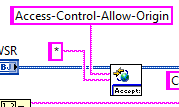

this.presentation is undefined
A brief history of time
(CLD Summit time, that is...)
The year might have been 2013...
Moving on to 2014...
Skip ahead to last year...
if (sad()){
sad().stop();
beAwesome();
}
And now...
Preliminaries...
HTML is HTTP, right?
http - a quick overview
From Wikipedia:
HTTP is an application layer protocol designed within the framework of the Internet protocol suite.
- Request-response protocol
- Depends on TCP for the the transport layer
- Is stateless
- Laurel says it is hefty
Let's talk
It's a little more complicated...
But wait...isn't there supposed to be more?

And what about the data?
{
"string": "This is data.",
"date": "10/30/2017",
"time": "4:09 PM",
"output cluster": {
"Y": [
0,
0.094108313318514311,
0.1873813145857246,
0.27899110603922922,
0.36812455268467792,
0.45399049973954675,
0.53582679497899655,
0.61290705365297649,
0.68454710592868862,
0.75011106963045948,
0.80901699437494734,
0.86074202700394353,
0.90482705246601947,
0.94088076895422534,
0.96858316112863108,
0.98768834059513766,
0.99802672842827156,
0.99950656036573149,
0.99211470131447788,
0.97591676193874732,
0.95105651629515364,
0.91775462568398114,
...
]
}
}
- Format data to make it (easily) consumable
- Utilize client tools to retrieve data automatically
- Watch out for cross-origin request errors

That all seems kinda clunky...
Let's add the following bit of code:
setInterval(getData, 1000)So now what?
- How are we going to synchronize the client and server?
- Should the app cover multiple views?
- Are there bandwidth considerations for structuring data or acquisition rates?
- How do we maintain a consistent style across the UI?
Now, why would I want to do this?
Your application will be more portable
You can utilize tools to develop a less LabVIEW-y UI
You are stepping outside of your comfort zone
Thanks for listening!
Matt Richardson
cirrusio@protonmail.com
https://github.com/lo-co